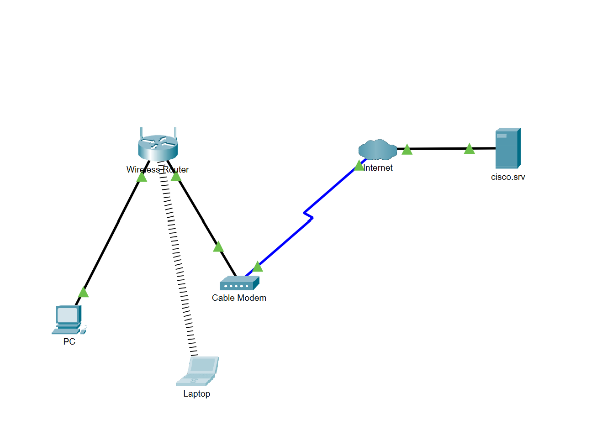

This project demonstrates my ability to design a Home Network using Cisco Packet Tracer
I connected connected multiple devices to create a functional network. This showcases a simple understanding of the
foundation of networking concepts WAN's and DHCP configuration
How it looks

What I did
Succesfully Set Up The Network
Configured the Devices
Tested the Network
What I learned
Networking Concepts
I have gained simulated hands on experiance with Wide Area Newtorks
How to configure Devices in a simulted environment
Network troubleshooting Techniques
I used command-line tools like "ipconfig /all" and "ping" to verify and troubleshoot network connectivity.